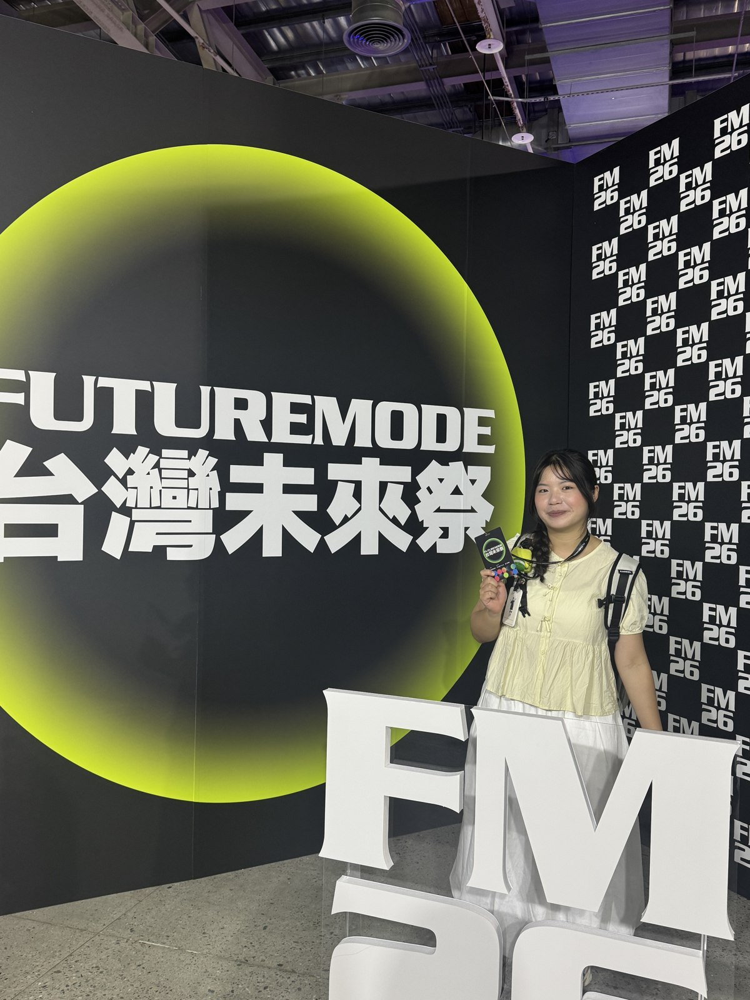

AI × ACCESSIBILITY
The Alert Finds Your Eyes
Exploring how cabin information can actively reach the person who needs it.
1st · Creative TrackRead ↗
I may take a little time to warm up, but I dive deeply into the work. I start with real problems, use data to understand the context, and turn AI, business and service design into work people can test and discuss.

A LITTLE CURIOUS. A LOT OF LULU.
I would rather show how I spot a problem, collaborate with a team and move an idea forward than simply list what I can do.
SELECTED WORK
Begin with the work that best represents me. Each project responds to a real problem.
AI × ACCESSIBILITY
Exploring how cabin information can actively reach the person who needs it.

LINE AI × TAPABLE
Extending accessible AI service design into public kiosks and digital journeys.

PUBLIC POLICY × YOUTH WORK
The Taipei Shadow Work Order Plan helps early work experience become visible.
EXPLORE MORE